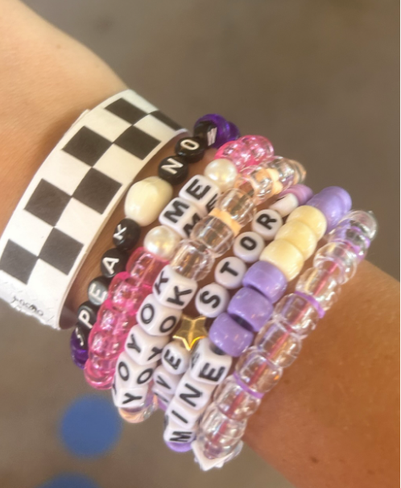

Listening to music - I love listening to different types of music, but my favorite are Christian music and Taylor Swift. My favorite Christian songs are Surrounded, Another in the Fire, 10,000 reasons, Counting Every Blessing and Set a Fire. My favorite Taylor Swift songs are YOYOK, Wonderland, Haunted and The Last Great American Dynasty.
Reading Canterwood Crest - I have been reading the Canterwood Crest books for so long, and I reread them about once a year. There are 18 books, and half of them are about Sasha, and half are about Lauren.
Making bracelets - One of my favorite things to do is make braclets. Over the summer I went to the Taylor Swift concert and me and my sisters made so many braclets.

Being with my friends - I love hanging out with my friends! We love to shop, watch movies and tv, swim, do crafts and more!
Taylor Swift - I like listening to TS music and her concerts are amazing. I have been to two of them and I think I am going to another next year.
Going to Church - I love going to church and seeing my friends and leaders there. My favorite parts are connecting with more Christain people, learning about God and worship. I also love going to my church camps!